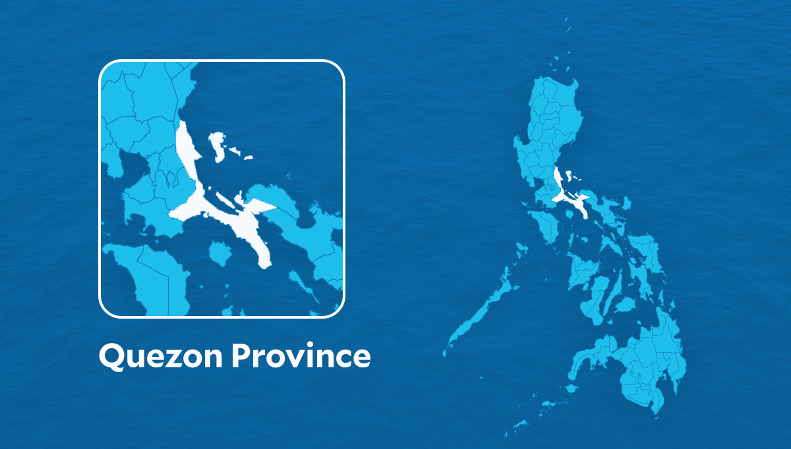

Small vessels in north Quezon stopped from sailing due to bad weather
person Delfin T. Mallari Jr. @dtmallarijrINQ - @inquirerdotnetInquirer Southern Luzon / calendar_month 11:05 AM January 16, 2024
LUCENA CITY — Sea travel in Quezon province was suspended starting Monday, Jan. 16, due to rough sea conditions, the Philippine Coast Guard (PCG) said.
The PCG, citing a 5 a.m. state weather bureau forecast, said strong gale with wind force and rough to very rough sea conditions associated with the northeast monsoon was affecting the southern Luzon seaboard, including the General Nakar coastal town, the northern and eastern coasts of Polillo Islands, and the eastern coast of Patnanungan and Jomalig in the northern part of Quezon facing the Pacific Ocean.
This meant that all trips of small sea craft with 250 gross tonnages or less, like motorized passenger or fishing boats, in northern Quezon had to be suspended.
The suspension order would be lifted and sea travel for small sea craft “may be resumed any time when weather/sea conditions permit as may be declared” by the Philippine Atmospheric, Geophysical, and Astronomical Services Administration, the PCG-northern Quezon said in the order posted around 6:45 a.m. Tuesday, Jan. 17, on the Facebook page of the Coast Guard District Southern Tagalog.
REACTION:
The suspension of sea travel in Quezon province due to rough sea conditions is a necessary precautionary measure by the Philippine Coast Guard (PCG) in response to the adverse weather conditions caused by the northeast monsoon. The safety of passengers and crew members should always be the top priority, and the decision to suspend trips for small sea craft reflects a responsible approach to ensure their well-being. The detailed information provided by the PCG, including the specific areas affected and the criteria for suspension, helps raise awareness among travelers and emphasizes the importance of respecting such warnings.
It is evident that the PCG is closely monitoring the situation, as reflected in their reliance on the state weather bureau's forecasts and the prompt issuance of the suspension order. The coordination with the Philippine Atmospheric, Geophysical, and Astronomical Services Administration (PAGASA) adds an additional layer of expertise, ensuring that the decision to resume sea travel will be based on accurate assessments of improved weather and sea conditions. This incident serves as a reminder of the unpredictable nature of weather patterns and the importance of having a robust system in place to safeguard the lives of those dependent on sea travel.
As the suspension order is contingent on the weather conditions, it underscores the dynamic and responsive nature of maritime safety protocols. The announcement through social media channels, particularly on the Facebook page of the Coast Guard District Southern Tagalog, is a commendable effort to disseminate information quickly and efficiently to the public. This incident highlights the significance of staying informed and adhering to safety advisories during adverse weather situations, reinforcing the collaborative efforts of government agencies to ensure public safety in vulnerable coastal areas.